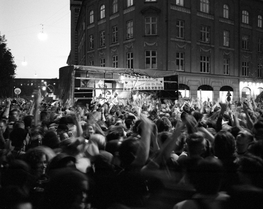

Eskil Halberg argumenterer for, at Distortion, der hvert år fylder Københavns gader med titusinder af festende mennesker, kun er ét radikalt skridt fra en kommunistisk utopi. Men Distortion er ikke kommunisme. Distortion er Facebook.

Foto: © Irina Boersma. Brugt med tilladelse.
Kommunisme kan kort defineres som et klasseløst, statsløst samfund, hvor produktionsmidlerne er under fælles ejerskab og alle yder efter evne og nyder efter behov. På sin blog på Modkraft argumenterer Eskil Halberg for, at gadefesten Distortion, der finder sted hvert år i den første uge i juni, lever op til disse kriterier, hvis begivenheden som affektiv begærsproduktion bliver fulgt til sin logiske konklusion:
Kun få ting skal laves om, før Distortion er befriet fra kapitalismen. Som udgangspunkt er Distortion gratis. Lyden er gratis. Lugten er gratis. Oplevelsen er gratis. Dine venner er gratis. Fællesskabet er gratis. Distortion er for alle, til alle, med alle. Vi er alle Distortion! Og Distortions dna er derfor kommunistisk.
Arbejderne på Distortion er deltagerne, os. Vi skaber festens værdi, netop gennem vores deltagelse, vores begær, vores affekter. Eskil mener imidlertid, at vi som Distortion-medarbejdere bliver udbyttet, da værdien vi skaber ikke tilhører os i fællesskab. Den bliver indfanget og akkumuleret af Distortion som kapitalistisk arbejdsgiver. Eskil opfordrer derfor til feststrejke og sågar -sabotage for at tvinge festen til at imødekomme vores krav om at give tilbage til fællesskabet.
Der er imidlertid et centralt element Eskil ikke får med i sin analyse af Distortions produktionsforhold. Den konklusion han når frem til, at Distortion kun kræver et arbejderoprør for at blive kommunistisk, er ikke holdbar. Hvis det var sådan at Distortion bare var en gadefest, hvor de dansende og drikkende deltagere skabte festens værdi gennem deres begær, ville et arbejderoprør sikkert kunne fremtvinge en omfordeling, om end den emo-aktivistiske taktik Eskil foreslår, nok bliver svær at overtale de enkelte festarbejdere til at deltage i: “Vi vil være sure/kedelige/ligeglade som organisatorisk og politisk strategi. Uden os stopper maskinen. Uden os ingen fest.”
Freemium i byrummet
Måden Distortion akkumulerer værdi, afhænger imidlertid ikke kun af deltagelse i gadefesten. Selv om produktionen af begær mellem nysgerrige blikke og dansende bevægelser i udgangspunktet skaber den værdi som Distortion akkumulerer, er det vigtigt at undersøge, hvordan denne værdi indfanges. Til dette formål tjener en model som bruges flittigt af en lang række web-tjenester: freemium-modellen.
Som freemium, der er et portmanteau af ordene ‘free’ og ‘premium’, leveres den grundlæggende tjeneste til brugerne gratis, mens mere avancerede features kræver betaling. Det er ikke helt ved siden af, at kalde brugerne arbejdere, da det netop er brugerne der skaber den værdi den pågældende service tilbyder. Online-eksemplerne er utallige: På Facebook, Flickr, Vimeo, Soundcloud, DropBox og mange andre tjenester leveres alt indhold af brugerne. De betaler godt nok ikke for tjenesterne, men kompenseres heller ikke for det arbejde de udfører, når de skaber og deler deres indhold.
Distortion er i denne model en tjenesteudbyder. For at forstå, hvordan den værdi som vi skaber ved at deltage i Distortion indfanges og akkumuleres, skal vi kigge efter hvem der vælger at betale for tjenesten. Ligesom premium-brugerne på nettet vælger at betale for de avancerede features, er der også brugere af Distortion som vælger at betale ekstra for adgang til de ellers lukkede fester Distortion også består af. Der er også superbrugere som betaler for adgang til at reklamere til gratis-brugerne af gadefesten. Dine data på Facebook er også tilgængelige for dem der vil betale for at kunne sende reklamer efter dig.
Præcis hvem der betaler for Distortions premium features og præcis hvad de får ud af det er uden for rækkevidden af en allerede alt for lang blogpost. Det er til gængæld muligt at pege på en alternativ måde at frigøre den værdi vi skaber, når vi deltager i gadefesten med vores begær og affekter.
Hack Distortion
Det kan godt være at Distortion har noget nær monopol på at feste i Københavns gader, men Distortion er ikke gadefesternes Microsoft eller Apple. (Det grundlæggende styresystem bag Distortion er snarere neoliberal bypolitik). Nej, Distortion er gadefesternes Facebook.
Ligesom Facebook lærer almindelige mennesker at bruge nettet til at kommunikere og skabe relationer, samt at dele deres erfaringer og produkterne af deres begær, lærer Distortion den almindelige dansker at bruge byrummet til præcis det samme. Facebook gør friheden til at ytre sig offentligt og organisere sig i fællesskaber alment tilgængelig, ofte med revolutionære resultater, som det ses i Nordafrika og Mellemøsten. Distortion viser sine deltagere, at byrummet er til for at blive brugt. Distortion er én måde at bruge byen på. Der er mange andre som bare venter på at blive skabt.
I stedet for at strejke og forsøge at lukke ned for Distortion, hvis ikke dens værdi bliver givet tilbage til de festende, bør vi hacke programmet og prøve nye koder af, koder der tillader os at skabe ny værdi i byrummet. I modsætning til langt de fleste freemium-tjenester på nettet, er kildekoden til at feste fri og åben.
*
Opdatering: Analysen af Distortion som freemium-tjeneste bliver bekræftet af kilden: Distortion opridser tarifferne for brug af det offentlige rum (via Eskil).